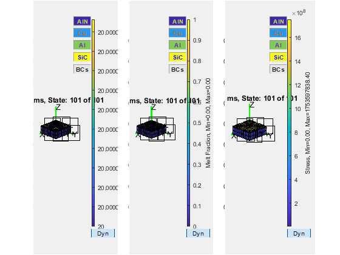
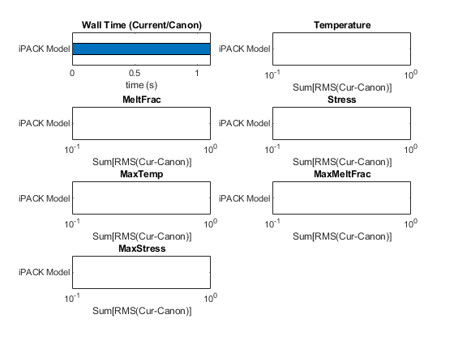

Run Stress Test Cases for Validation
This M file executes a specified set of validation test cases for ParaPower, producing two figures: 1) the model geometry and 2) temperature, melt fraction, and stress states. A third figure comparing execurtion time and available degrees of freedom will also be generated if there is a canonical case stored in the Validation/CasesHold directory.
Contents
- Description
- Initialization
- 1. Eval the skeleton file (creates the material database, geometry and analysis parameters)
- 2. Creates MI data structure (this is the fully created model that is evaluated)
- 3. Run Thermal Analysis
- 4. Store the results in PPResult object
- 5. Run Stress Analysis
- 6. Store the results in PPResult object
- 7. Store various analysis meta-data
- 8. Checks to see if a benchmark (previous analysis that has already been validated) for this case exists, if so creates a new compare data structure that includes:
- 9. If no old case existed, save this analysis as the new benchmark.
- 10. Generate temperature, melt fraction, and stress figures.
- 11. Calculate and store RMS differences for each DoF
- 11. Figure 10: Bar graphs that illustrate timing and accuracy of current analytical method
- Retrieve skeleton test case filenames to be evaluated
Description
The test cases to run exist as shortcuts/links in the Validation/Cases directory. The actual file should exist in the Validation/CasesHold directory.
% The first time a case is run, a file is generated with the name % CASENAME_Results.ppmodel. This file holds both the model definition as % well as the results of the analysis at the time, and is used as the % canonical model for comparison. % The file can be loaded into ParaPower_GUIV2 using the "load profile" GUI % button. The model/geometry will be loaded, but not the results.
Initialization
clear variables
clearvars -EXCEPT TestCaseWildCard % Must start in ARL_ParaPower/Validation fprintf('Make sure the program run from the ARL_ParaPower/Validation folder\n') % Set path addpath('..'); %include above directory which contains the parapower code, i.e., ARL_ParaPower CaseDir = 'Cases'; %Update this to include the directory that will hold the case files. StressPath = '../Stress_Models'; % did the user specify the wildcard? if exist('TestCaseWildCard') disp(['Only running cases meeting the following wildcard (TestCaseWildCard): ' TestCaseWildCard]) else disp('TestCaseWildCard variable doesn''t exist, running all testcases.') TestCaseWildCard = 's*.m'; end fprintf('\n') % get all filenames in the folder matching the wildcard testcasefiles = get_all_filenames(CaseDir,TestCaseWildCard); % % read the data % load('DefaultMaterials.mat','MatLib') % rename the data OrigMatLib = MatLib; clear MatLib % Initialize "Compare" cell Compare = []; % start graphics figure(1);clf figure(2);clf drawnow % iterate through all filenames for Icase=1:length(testcasefiles)
clearvars -EXCEPT TestCaseWildCard Icase testcasefiles StressPath StressModel Compare CaseName = char(testcasefiles(Icase).name); if ispc && strcmpi(CaseName(end-3:end),'.lnk') [path,name,ext] = fileparts(getTargetFromLink([testcasefiles(Icase).folder '\' CaseName])); CaseName = [name ext]; testcasefiles(Icase).folder = path; end CaseName = CaseName(1:end-2); clear path
1. Eval the skeleton file (creates the material database, geometry and analysis parameters)
if isempty(str2num(CaseName(1))) clear StressModel fprintf('Executing test case %s...\n',CaseName) VarsOrig = who; addpath(testcasefiles(Icase).folder); eval(CaseName) rmpath(testcasefiles(Icase).folder) CaseExists = true; else fprintf('Can''t execute ''%s''. Name cannot start with a number.\n',CaseName) CaseExists = false; end if CaseExists
% Erase all newly created variables in the test case M file VarsNew = who; VarsOrig = [VarsOrig; 'VarsOrig'; 'TestCaseModel'; 'VarsNew'; 'Vi'; 'MFILE'; 'StressModel']; % Iterate through each variable in VarsNew for Vi = 1:length(VarsNew) if isempty(cell2mat(regexp(VarsOrig,['^' VarsNew{Vi} '$']))) % fprintf('Clearing %s\n',VarsNew{Vi}); clear (VarsNew{Vi}) % else % fprintf('Leaving %s\n',VarsNew{Vi}); end end clear VarsOrig VarsNew % Material Properties if isfield(TestCaseModel.TCM,'MatLib') || isprop(TestCaseModel.TCM,'MatLib') MatLib = TestCaseModel.TCM.MatLib; else disp('Adding default materials from the material database to the model') TestCaseModel.TCM.MatLib = OrigMatLib; %return end %save([MFILE '.ppmodel'], '-mat', 'TestCaseModel');
2. Creates MI data structure (this is the fully created model that is evaluated)
MI = FormModel(TestCaseModel.TCM);
if length(testcasefiles)==Icase
figure(1);clf; figure(2);clf; figure(1)
%
% Fig. 1 (Geometry)
%
Visualize ('Model Input', MI, 'modelgeom','ShowQ')
end
fprintf('Analysis executing...')
Analysis executing...
3. Run Thermal Analysis
tic; % timing start ^^^^^^^^^^^^^^^^^^^^^^^ GlobalTimeOrig = MI.GlobalTime; MI.GlobalTime = GlobalTimeOrig(1); %Setup initialization S1 = scPPT('MI',MI); %Initialize object setup(S1,[]); % % Compute states at times in ComputeTime (S1 must be called with 1 arg in 2017b) % [Tprnt_partial, T_in, MeltFrac_partial,MeltFrac_in] = S1(GlobalTimeOrig(1:end)); % concatenate along 4th dimension (time) Temperature = cat(4, T_in , Tprnt_partial ); MeltFrac = cat(4, MeltFrac_in , MeltFrac_partial); NewResults.Temperature = Temperature; NewResults.MeltFrac = MeltFrac; % Reassemble MI's global time to match initialization and computed states. MI.GlobalTime = GlobalTimeOrig; Fi = 1; %Could be used to mask for features; (Tprnt would be Tprnt(Mask) % First column of MaxTemp/MaxMeltFrac is time vector, second column is the % max for each time % TC 07-31-2020: changed DoutT and DoutM into MaxTemp and % MaxMeltFrac NewResults.MaxTemp(:,1+Fi) = max(reshape(NewResults.Temperature,[],length(MI.GlobalTime)),[],1); NewResults.MaxMeltFrac(:,1+Fi) = max(reshape(NewResults.MeltFrac,[],length(MI.GlobalTime)),[],1); NewResults.MaxTemp(:,1) = MI.GlobalTime; NewResults.MaxMeltFrac(:,1) = MI.GlobalTime;
Transient Analysis
4. Store the results in PPResult object
ResultsObj = PPResults(now, MI, TestCaseModel.TCM,'Thermal','MeltFrac'); ResultsObj = ResultsObj.setState('Thermal', Temperature); ResultsObj = ResultsObj.setState('MeltFrac', MeltFrac); OldPath = path; addpath(StressPath); % %
5. Run Stress Analysis
eval(['Stress = Stress_' StressModel '(ResultsObj);']); ExecTime = toc; % timing end vvvvvvvvvvvvvvvvvvvvvvvvvvv path(OldPath);
Thermal: 12x12x7x101
MeltFrac: 12x12x7x101
Stress =
struct with fields:
X: [12×12×7×101 double]
Y: [12×12×7×101 double]
Z: [12×12×7×101 double]
VM: [12×12×7×101 double]
6. Store the results in PPResult object
NewResults.Stress = Stress.VM;
disp('Taking only the stress VM part')
% TC 07-31-2020: added in MaxStress
NewResults.MaxStress(:,1+Fi) = max(reshape(NewResults.Stress,[],length(MI.GlobalTime)),[],1);
NewResults.MaxStress(:,1) = MI.GlobalTime;
Taking only the stress VM part
7. Store various analysis meta-data
a. Date/Time of analysis
NewResults.DateTime = datetime;
% b. Timing information (how long the analysis took)
NewResults.ExecTime = ExecTime;
% d. Description of model
NewResults.Desc = TestCaseModel.Desc;
% c. Computer architecture of analysis (PC/Linux/Mac/etc)
NewResults.Computer = computer();
% e. MATLAB version
NewResults.Matlab = ver('matlab');
8. Checks to see if a benchmark (previous analysis that has already been validated) for this case exists, if so creates a new compare data structure that includes:
check if MFILE exists (file address of test case)
if exist([MFILE '.m'],'file') % create .ppmodel file with same name as test case skeleton ResultsFile = [MFILE, '_Results.ppmodel']; % check to see if benchmark exists if exist(ResultsFile,'file') % load benchmark results as .mat file OldResults = load(ResultsFile,'-mat'); if ~isfield(OldResults,'NewResults') disp([ResultsFile ' uses older version of stored results file. ''Results'' variable is now named ''NewResults''.']) OldResults = OldResults.('Results'); else OldResults = OldResults.('NewResults'); end % populate Compare struct with time comparison Compare{Icase}.Desc = TestCaseModel.Desc; % a. Time comparison (current time for analysis/previous time for analysis) Compare{Icase}.DeltaTime = NewResults.ExecTime / OldResults.ExecTime; Compare{Icase}.GlobalTime = MI.GlobalTime; % b. For each DoF (Temperature, Melt Fraction, Stress) compute difference between old results and new results DoFList = {'Temperature' 'MeltFrac' 'Stress' 'MaxTemp' 'MaxMeltFrac' 'MaxStress'}; try if size(NewResults.Temperature) == size(OldResults.Temperature) % iterate through each degree of freedom for Idof=1:length(DoFList) % look for each degree of freedom (Temperature, % MeltFrac, Stress) in NewResults. if isfield(NewResults,DoFList{Idof}) Compare{Icase}.DOFdesc{Idof} = DoFList{Idof}; % find difference between old (canonical) % case and current case Compare{Icase}.DOFdelt{Idof} = OldResults.(DoFList{Idof}) - NewResults.(DoFList{Idof}); end end % DoFList = {'MaxTemp' 'MaxMeltFrac' 'Stress'}; % for Idof = 1:length(DoFList) % if isfield(NewResults,DoFList{Idof}) % % append DoFList descriptions to end of % % Compare % Compare{Icase}.DOFdesc{end+1} = DoFList{Idof}; % Compare{Icase}.DOFdelt{end+1} = OldResults.(DoFList{Idof}) - NewResults.(DoFList{Idof}); % end % end else Compare{Icase}.DOFdesc = {'N/A'}; Compare{Icase}.DOFdelt = []; disp(['Saved case does not match current case for ' TestCaseModel.Desc ]); end catch ME Compare{Icase} = []; Compare{Icase}.Desc = ''; Compare{Icase}.DOFdelt = {[]}; Compare{Icase}.DOFdesc = {''}; disp('Previous data comparison impossible') end else
9. If no old case existed, save this analysis as the new benchmark.
fprintf('Results file not found. A new one will be created (%s)\n', ResultsFile); save (ResultsFile,'-mat','NewResults','TestCaseModel')
end else disp('Results file not requested.') end fprintf('Complete.\n')
Complete.
10. Generate temperature, melt fraction, and stress figures.
if length(testcasefiles)==Icase figure(2);clf; pause(.001) StateN = length(MI.GlobalTime); subplot(1,3,1); % % plot temperature state at last time step % Visualize(sprintf('t=%1.2f ms, State: %i of %i',MI.GlobalTime(end), StateN,length(NewResults.Temperature(1,1,1,:))),MI ... ,'state', NewResults.Temperature(:,:,:,StateN) ... ,'scaletitle', 'Temperature' ... ) subplot(1,3,2); % % plot melt frac at last time step % Visualize(sprintf('t=%1.2f ms, State: %i of %i',MI.GlobalTime(end), StateN,length(NewResults.MeltFrac(1,1,1,:))),MI ... ,'state', NewResults.MeltFrac(:,:,:,StateN) ... ,'scaletitle', 'Melt Fraction' ... ) subplot(1,3,3); % % plot stress at last time step % Visualize(sprintf('t=%1.2f ms, State: %i of %i',MI.GlobalTime(end), StateN,length(NewResults.Stress(1,1,1,:))),MI ... ,'state', NewResults.Stress(:,:,:,StateN) ... ,'scaletitle', 'Stress' ... ) end %figure(3);clf; pause(.001) %Visualize(sprintf('t=%1.2f ms, State: %i of %i',StateN*MI.DeltaT*1000, StateN,length(Temperature(1,1,1,:))),[0 0 0 ],{MI.X MI.Y MI.Z}, MI.Model, MeltFrac(:,:,:,StateN),'Melt Fraction') %disp('Press key to continue.');pause
end
Executing test case s022_iPACK...
end % end of iterator % start preparing to plot fig. 10 (comparison) DOFDesc = {}; CaseDesc = {};
Make sure the program run from the ARL_ParaPower/Validation folder Only running cases meeting the following wildcard (TestCaseWildCard): s*.m
11. Calculate and store RMS differences for each DoF
for I = 1:length(Compare) if ~isempty(Compare{I}.Desc) CaseDesc{I} = Compare{I}.Desc; for J = 1:length(Compare{I}.DOFdelt) if size(Compare{I}.DOFdelt{J}(:))==2 % PlotCompare stores RMS comparison values PlotCompare(I,J) = sum((Compare{I}.DOFdelt{J}(:)).^2); else PlotCompare(I,J) = sum((Compare{I}.DOFdelt{J}(:,2)).^2); end DOFDesc{J} = Compare{I}.DOFdesc{J}; DeltaTime(I) = Compare{I}.DeltaTime; end end end
11. Figure 10: Bar graphs that illustrate timing and accuracy of current analytical method
if ~isempty(DOFDesc) figure(10); clf NumCols = 2; % dimension of subplot NumRows = ceil((1+length(DOFDesc))/NumCols); % dimension of subplot % subplot from #2 to the last for I = 1:length(DOFDesc) subplot(NumRows,NumCols,I+1) barh(PlotCompare(:,I)); set(gca,'yticklabel',strrep(CaseDesc,'_',' ')) xlabel('Sum[RMS(Cur-Canon)]') title(DOFDesc{I}) set(gca,'xscal','log') end % subplot #1 if exist('DeltaTime','var') subplot(NumRows,NumCols,1) barh(DeltaTime) set(gca,'yticklabel',strrep(CaseDesc,'_',' ')) title('Wall Time (Current/Canon)') xlabel('time (s)') end else disp('No comparison possible, third figure not generated.') end
Retrieve skeleton test case filenames to be evaluated
function testcasefiles = get_all_filenames (CaseDir,TestCaseWildCard) % CaseDir == 'Cases' % TestCasesFspec == 'Cases/s*.m' % construct the pathname according to the wildcard TestCasesFspec = [CaseDir '/' TestCaseWildCard ]; % replace '**' with '*', for situations with multiple wild cards TestCasesFspec = strrep(TestCasesFspec,'**','*'); % get all of the filenames testcasefiles = dir([TestCasesFspec '*']); % adjust filenames for Windows file system vs. Linux if ispc testcasefiles = [testcasefiles dir([TestCasesFspec '.lnk'])]; end end